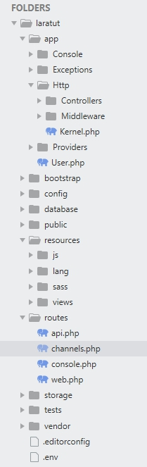
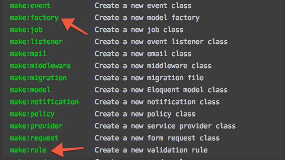

Contents:-
- Introduction to Laravel Framework
- Installation
- Structure
- Routing
- MVC Arch.
- Artisan Command Line Tool
- Controllers
- Views & Blade Template Engine
- Query Builder & Eloquent Model
- FORM Handling
What is LARAVEL?
- Laravel is a MVC PHP framework created by Taylor Otwell in
2011
- Free open-source license with many contributors worldwide
- One of the most popular and preferred frameworks
- High Security & Scalability
Why Laravel?
- Security
- MVC
- Best Documentation
- Easy Expansion with composer
- Blade Template Engine
- Laracast
- Database Migrations
- Artisan
Other PHP Frameworks
- Symfony
- Phalcon
- CodeIgniter
- FuelPHP
- Zend Framework
- PHPixie
- CakePHP
- Yii
- Slim
Contents:-
- Introduction to Laravel Framework
- Installation
- Structure
- Routing
- MVC Arch.
- Artisan Command Line Tool
- Controllers
- Views & Blade Template Engine
- Query Builder & Eloquent Model
- FORM Handling
Setup Environment
Install XAMPP
https://www.apachefriends.org/xampp-files/7.4.2/xampp-win42-7.4.2-0-VC15-installer.exe
Install Composer
https://getcomposer.org/Composer-Setup.exe
Install Any Editor
Sublime / VSCode / NotePad++ etc.
Open Command Line and goto
cd C:\xampp\htdocs
directory. all your web files will be stored
here.
Installation
Note: PHP >= 7.1.3 is required
Via Laravel Installer
composer global require laravel/installer
laravel new blog
Via Composer Create-Project
composer create-project --prefer-dist laravel/laravel blog
Setup APACHE
Open the file xampp/apache/conf/httpd.conf in a editor and
change
the DocumentRoot to the new Laravel Application public directory.
DocumentRoot "C:/xampp/htdocs/laratut/public"
<Directory "C:/xampp/htdocs/laratut/public">
Options Indexes FollowSymLinks Includes ExecCGI
AllowOverride All
Require all granted
</Directory>
Finished Installation
Open Browser and goto http://localhost
Contents:-
- Introduction to Laravel Framework
- Installation
- Structure
- Routing
- MVC Arch.
- Artisan Command Line Tool
- Controllers
- Views & Blade Template Engine
- Query Builder & Eloquent Model
- FORM Handling
- /app
- /app/Http
- /config
- /database
- /public
- /resources
- /routes
- /vendor

Contents:-
- Introduction to Laravel Framework
- Installation
- Structure
- Routing
- MVC Arch.
- Artisan Command Line Tool
- Controllers
- Views & Blade Template Engine
- Query Builder & Eloquent Model
- FORM Handling
Basic Routing:
Open routes/web.php to add new routes.
Route::get('/', function () {
return 'Hello World';
});
Available Methods:
Route::get($uri, $callback);
Route::post($uri, $callback);
Route::put($uri, $callback);
Route::patch($uri, $callback);
Route::delete($uri, $callback);
Route::options($uri, $callback);
Route Parameters:
Route::get('user/{id}', function ($id) {
return 'User '.$id;
});
You may define as many route parameters as required by your route:
Route::get('posts/{post}/comments/{comment}', function ($postId, $commentId) {
//
});
Contents:-
- Introduction to Laravel Framework
- Installation
- Structure
- Routing
- MVC Arch.
- Artisan Command Line Tool
- Controllers
- Views & Blade Template Engine
- Query Builder & Eloquent Model
- FORM Handling
Contents:-
- Introduction to Laravel Framework
- Installation
- Structure
- Routing
- MVC Arch.
- Artisan Command Line Tool
- Controllers
- Views & Blade Template Engine
- Query Builder & Eloquent Model
- FORM Handling
ARTISAN
Artisan is the command-line interface included with Laravel. It provides a number of helpful
commands that can assist you while you build your application.
php artisan list

Contents:-
- Introduction to Laravel Framework
- Installation
- Structure
- Routing
- MVC Arch.
- Artisan Command Line Tool
- Controllers
- Views & Blade Template Engine
- Query Builder & Eloquent Model
- FORM Handling
Controllers:
Instead of defining all of your request handling logic as Closures in route files, you may wish
to organize this behavior using Controller classes. Controllers
are stored in the app/Http/Controllers directory.
namespace App\Http\Controllers;
use App\Http\Controllers\Controller;
class UserController extends Controller
{
public function index()
{
return "Hello World";
}
}
You can define a route to this controller action like so:
Route::get('user', 'UserController@index');
Contents:-
- Introduction to Laravel Framework
- Installation
- Structure
- Routing
- MVC Arch.
- Artisan Command Line Tool
- Controllers
- Views & Blade Template Engine
- Query Builder & Eloquent Model
- FORM Handling
Views:
Views contain the HTML served by your application and separate your controller / application
logic from your
presentation logic. Views are stored in the resources/views directory.
Route::get('/', function () {
return view('hello');
});
Passing Data To Views:
return view('hello', ['name' => 'Victoria']);
Blade Template Engine:
Defining A Layout : layout.blade.php
<html>
<head>
<title>App Name - @yield('title')</title>
</head>
<body>
@include('header')
<div class="container">
@yield('content')
</div>
@include('footer')
</body>
</html>
Blade Template Engine:
Extending Layout
@extends('layouts.app')
@section('title', 'Page Title')
@section('content')
<p>This is my body content.</p>
@endsection
Blade Template Engine:
Displaying Data , Conditional Statements & Looping
Hello, {{ $name }}.
@if (count($records) === 1)
I have one record!
@elseif (count($records) > 1)
I have multiple records!
@else
I don't have any records!
@endif
@for ($i = 0; $i < 10; $i++)
The current value is {{ $i }}
@endfor
@foreach ($users as $user)
<p>This is user {{ $user->id }}</p>
@endforeach
Contents:-
- Introduction to Laravel Framework
- Installation
- Structure
- Routing
- MVC Arch.
- Artisan Command Line Tool
- Controllers
- Views & Blade Template Engine
- Query Builder & Eloquent Model
- FORM Handling
Query Builder:
The database configuration for your application is located at config/database.php.Once you
have configured your database connection, you may run queries using the DB facade.
The DB facade provides methods for each type of query: select, update, insert,
delete, and statement.
$users = DB::select('select * from users where active = ?', [1]);
$affected = DB::update('update users set votes = 100 where name = ?', ['John']);
$deleted = DB::delete('delete from users');
DB::statement('drop table users');
Eloquent ORM:
The Eloquent ORM included with Laravel provides a beautiful, simple ActiveRecord implementation
for working with your
database. The easiest way to create a model instance is using the make:model Artisan
command:
php artisan make:model Blog
// With migrations
php artisan make:model Blog -m
Database Model:
<?php
namespace App;
use Illuminate\Database\Eloquent\Model;
class Flight extends Model
{
protected $table = 'my_flights';
protected $primaryKey = 'id';
public $timestamps = false;
}
Contents:-
- Introduction to Laravel Framework
- Installation
- Structure
- Routing
- MVC Arch.
- Artisan Command Line Tool
- Controllers
- Views & Blade Template Engine
- Query Builder & Eloquent Model
- FORM Handling
Advanced Features:-
- Middleware
- Route Groups, Route Namespacing, Route Prefixing
- Route Model Binding
- Events / Listeners
- Jobs
- Console Commands
- Authentication & Authorization
- Database Migrations and Seeding
- Exception Handling & Logging
- Testing (Unit & Acceptance)